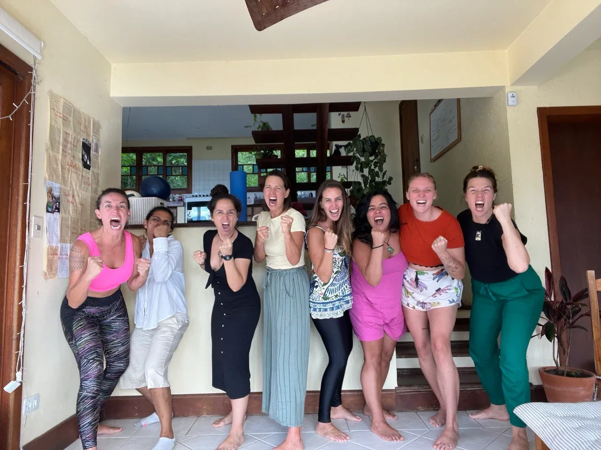
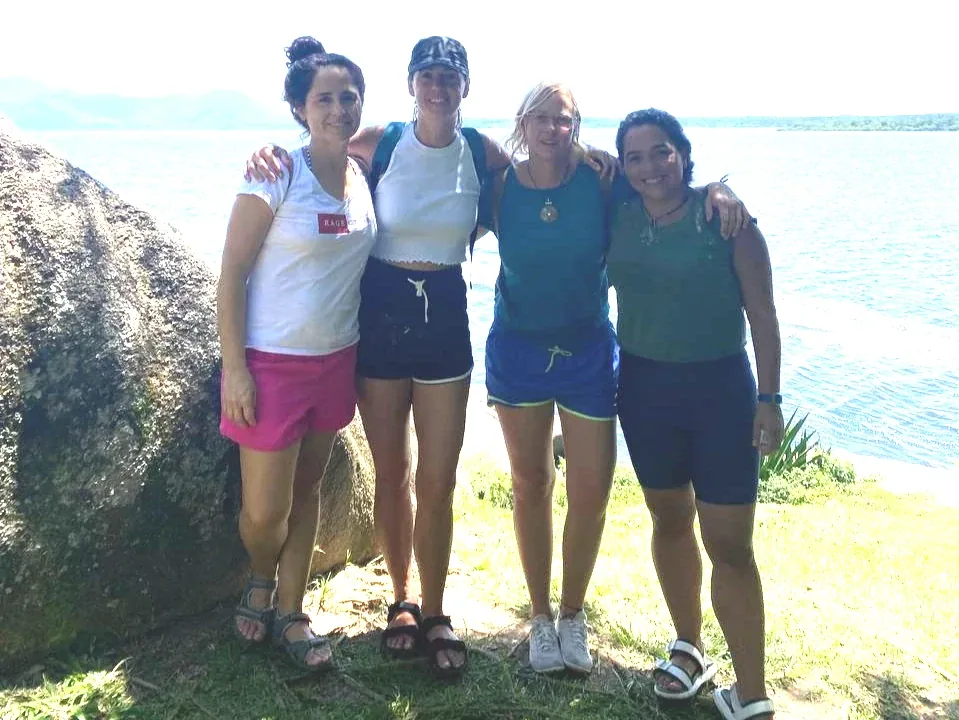
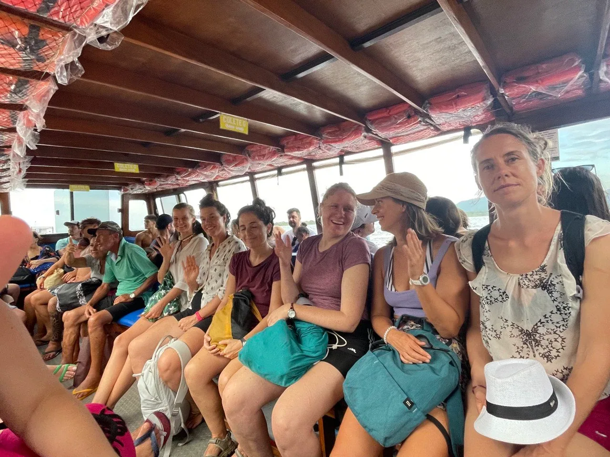
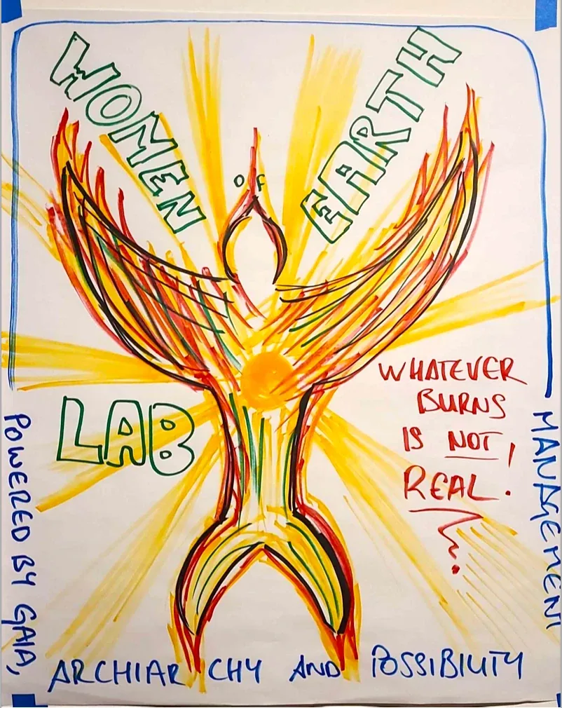
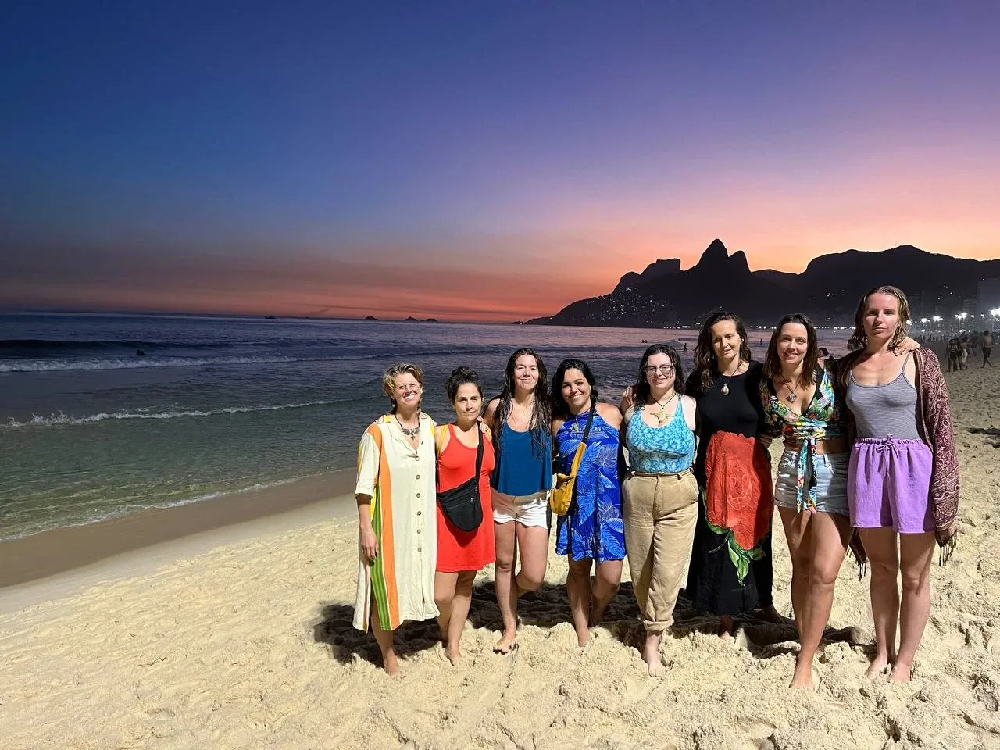
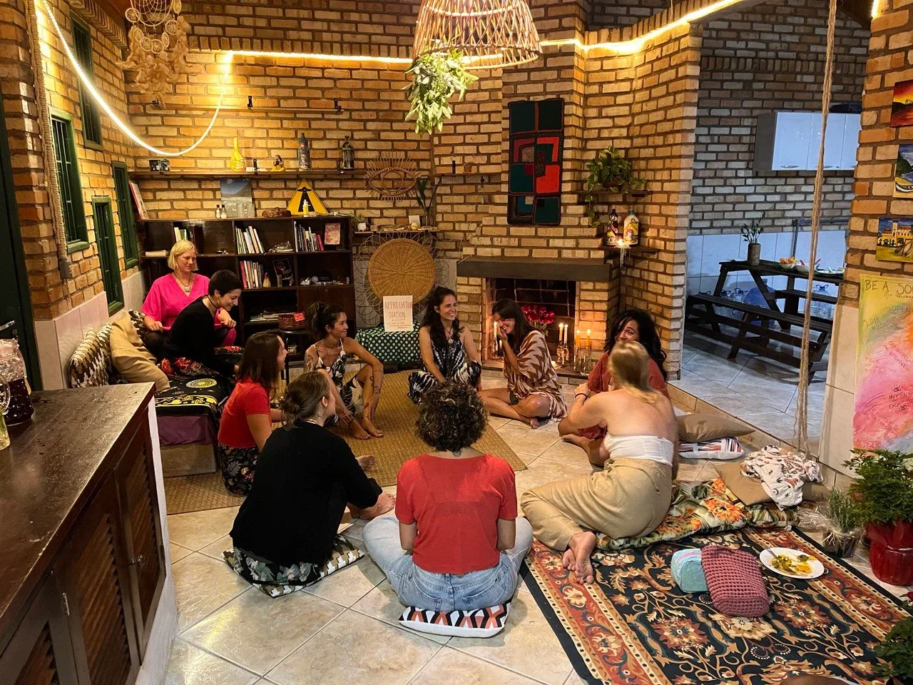
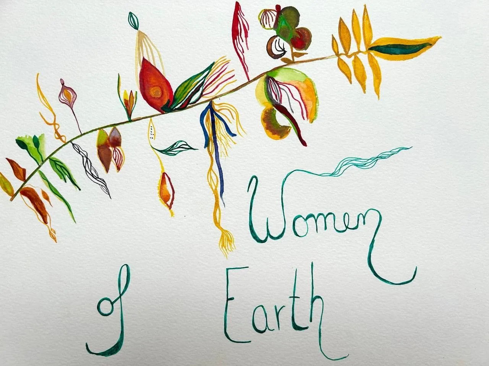
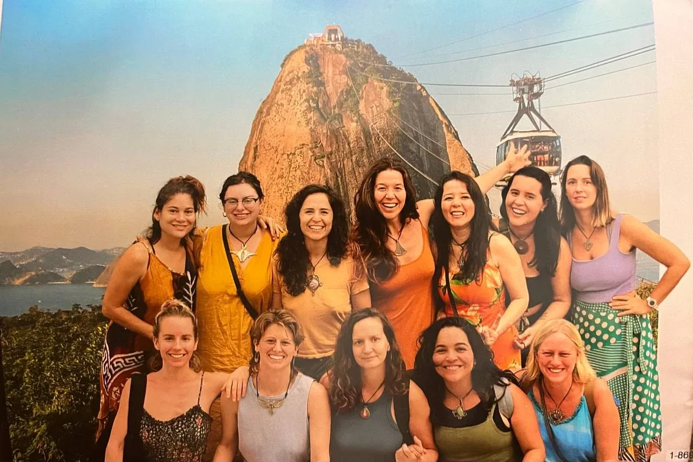

Women Of Earth Bridge-House on Strikingly
-
The Women Of Earth Bridge-House is a Radically Responsible Gaian Gameworld and part of the Global Archan Gameworld Speciality of the Possibilitator Training called Bridge-House Spaceholder. The Women Of Earth Bridge-House is an Archiarchy Invention Center, as well as a Training Bridge-House, and therefore part of the Bridge-House Training Centre.
The Woman Of Earth Bridge-House is dedicated to researching, developing and embodying Archiarchy life-skills for Women, for the purpose of training each Woman to become a Dignified and Arrogant Spaceholder for Archiarchy, in a co-living training and research space otherwise called: Bridge-House.
The Women Of Earth Bridge-House is a live-in, train-in environment for Women to authentically grow up and become Spaceholders for Archiarchy to effectively emerge and unfold so it can be inhabited by each of the Archan Specialities.
It is evident that for Archiarchy to unfold and be inhabited Archiarchy Spaceholders are required.
Since the legendary happening of the first Women Of Earth Possibility Lab in Portugal in 2023 with Trainers Anne-Chloé Destremau and Vera Luísa Franco, it became clear that those Spaceholders are Archetypally Initiated Women.
Women carry inside of them the Seeds of Archiarchy. Those seeds are laying mostly dormant, waiting for Women to authentically grow up and take a stand for a culture that honors and unfolds those seeds.
In Patriarchy, women are sex-slave-mommies to the men.
For them to survive inside the Patriarchy women need to develop the survival skills like:
- Chronic Self-Doubting
- Become a White, Grey, or Black Widow
- Give their power and authority away and become Adaptive
- Be seen as compassionate, nice, easy-going, never unfair or rude: a Good Girl
- Compete with other women for the bread-crumbs of the attention and protection of a man
- Develop hypnotizing Fantasy Worlds to live in instead of facing the reality of Patriarchy
- Become a successful Patriarchal Woman that is at the top of the Hierarchy and tries to beat men at their own game
- Care-taking of all the men around them
- Projecting their father into every men they date
- Hating men as their only protection against their abuse
- Pretending to not have clarity about the exact impact that Patriarchy has in them and in the world
- Pretending to not have a Gremlin
- Pretending that her partner does not have a Gremlin
- Putting what she wants at the bottom of the priority list
- Raise more patriarchal men and women
- Using her Dramaholism to create ecstasy in her life
An Archetypally Initiated Woman is a Woman that has undergone enough transformational, healing, and initiatory processes such that she is stable enough in Adult Ego State and be a Free and Natural Adult. This means that she is capable of moving from a consciously placed Point Of Origin of Radical Freedom so that she can authentically and ecstatically take Radical Responsibility with conscious Dignity and Arrogance.
A Dignified Arrogant Woman holding space for Archiarchy to develop and unfold in the world is a Woman Of Earth.
For Women to grow up authentically in such a way they need initiatory trainings such as Expand The Box Trainings, Possibility Village Labs, Heal From School Labs, Intimacy Journeyer Labs, Feelings Practitioner trainings, and Women Of Earth Labs. They also need healing and transformation practice spaces to embody Archiarchy and create from their Seeds, and to train themselves and each other to effectively hold space for Archiarchy.
The WOEBH functions following the Tansley effect. The Tansley effect is creating multiple parallel experiments working on the same ‘problem’ - in this case, building regenerative cultures for a bright future for humanity of Planet Earth. Each group of skilled and experimental edgeworkers routinely share their findings. Each new independent finding becomes a common input into everyone else’s process. The cumulative output is part of the Creative Commons. The Tansley effect is much more effective and interesting than Competition and is a basis of Archiarchy.
A Bridge-House, like any Archan gameworld, is an evolutionary gameworld. The Bridge-House itself is on an ongoing path of transformation and redesign. This is only possible if the spaceholders (and participants) are themselves on the Path of Evolution through ongoing matrix building processes (Emotional Healing Processes, Adult and Archetypal Initiatory Processes, and experimentation).
A Bridge-House is both an environment for growing up and an environment to develop each participant's Archan Speciality (or Nonmaterial Value). Therefore, each Woman Of Earth needs to be skilled in holding space for and navigating evolutionary processes while invoking the potential nonmaterial value in each other. These are advanced evolutionary skills that take practice.
-
The Bright Principles of the Women Of Earth Bridge-House
-
When, Where, How Much...?
Let's get the logistics out of the way.
WHEN?
The first Women Of Earth Bridge-House officially started on December 27th, 2024, in Brazil. The first BHTC Bridge-House is set to go at least until the 16th of March 2023, which is the start date of the Women Of Earth Lab in Brazil, with the possibility of extending it or creating a second iteration after the Lab, until the 30th of April 2024.
WHO?
You can apply to the Woman Of Earth Bridge-House if:
- You have completely and irrevocably left your parents’ house for more than 6 months at the start of your stay (this means that you have no clothes, photos, diplomas or storage in your parent’s house),
- You are no longer studying in a modern culture school (University or other programs),
- You are no longer working for a corporation for the past 3 months,
- You hold space for evolutionary spaces (healing and transformation) for more than 3 months,
- You have participated in a Gremlin Transformation Core Chapter (Chapter 0) or have applied to the next one being offered,
- You have participated in a Spaceholder Training (RCST, FCST, Possibility Coaching Training, Matrix Building Team),
- You have participated in at least one Expand The Box Training,
- You have participated in at least one Possibility Lab,
- You are in or currently working your steps to enter the Possibilitator Training,
- You have the ability to generate more than 800 Euros / month of income on average through delivering your Nonmaterial Value & other nickel machine
HOW MUCH?
We do not have concrete final prices as the location is still to be determined. We are estimating that the cost of rent including all utilities will be between 400-500 Euros / month.
The cost for the food is that of local market food. We share food costs equally.
Incidental living costs would need to be considered: buying seeds for the garden, hardware tools for fixing the place, etc...
There are no fees towards the spaceholders.
If the lack of money is the reason why you are hesitating to join the WOEBH (or any Bridge-House), it is ridiculous. Because there is enough money in the world for you to join the Bridge-House. The conversation is not then about money, but: how are you blocking the resources to support your Evolutionary Path to flow through you?
This question is the gateway to multiple Emotional Healing Processes and thoughtware upgrade.
To prepare yourself, please read and do the experiments at:
http://becomemoney.mystrikingly.com
http://youandyourjob.mystrikingly.com
http://nonmaterialvalue.mystrikingly.com
____________________________________________________
TO APPLY, PLEASE CONTACT VERA FRANCO ( vera l franco @ gmail. com )
OR BY TELEGRAM: +44 7748 934 374. APPLICATIONS ARE OPEN FROM DECEMBER 6TH, 2023.
_____________________________________________________
Vera will set up a Conversaview with you and another WOEBH Participant as a Training Space for them. A Conversaview is a process where both you and the spaceholder discover what is the next step for your participation in the WOEBridge-House. It can be anything. No two people would have the same steps.
When it is evident that you have entered the Women Of Earth Bridge-House and that your next step is to join the WOEBH, you have been organically ‘integrated’ in the amoeba, then you will be officially welcome to join the WOEBH.
The context of the Women Of Earth Bridge-House is Radical Responsibility.
If we were perfectly clear about what Radical Responsibility is, there would no need to say more about the subject. It is, of course, not the case.
Radical Responsibility means:
What is, is, as it is, here and now in the moment, with no story attached. (Arnaud Desjardins)
Just this. (Lee Lozowick)
There is no such thing as a problem. It is impossible to be a victim. Irresponsibility is an illusion. You have a Box. You are not your Box. Low drama is Gremlin food. Responsibility is applied consciousness. If you see a job it is your job to do. The universe is built out of archetypal love. (Clinton Callahan)
A Radically Responsible context invokes in each person the Free and Natural Decontaminated Adult Ego State (archived — not captured) Archetypally Initiated Woman or Man, and the Creative Collaboration between them.
The unquenchable clarity and unreasonable possibilities that emerge from such a clear context can make your Gremlin go into an immediate freak-out self-abuse feeding-frenzy accompagnied Voices, Self-Cannibalism behaviour, Gremlin Violence, Shame, Doubt, Depression and other mixed emotions, Conclusions, Projections, Expectations and Resentments. This is why we have a list of requirement to apply to the WOEBH.
In the WOEBH, we apply Torus Technology for our meeting and decision-taking. For more information about Torus Technology, go here: https://torustechnology.mystrikingly.com/.
The WOEBH makes use of the distinctions, processes, skills and technology of Possibility Management (http://possibilitymanagement.org). Technology, tools and processes from other contexts are used to further the purpose of the RFBH, such as Permaculture, Natural Farming, Reforestation, Family Constellation, etc...
Documentation
The WOEBH is a research center, a healing and transformation space, and a training center. Therefore all the research from the healing and trasformation is documented and shared profusely to all Radical Freedom researchers and Bridge-House Spaceholders. This will be done in various forms: newsletters, videos, articles, manuals, worktalks, workshops, group processes, initiations, and more.
The path is clear and to be co-designed by every member of the Women Of Earth Bridge-House. Therefore there is not curriculum or pre-defined formula. You make the path by walking it. Still there will be important aspects and dimension of healing to develop and unfold, such as:
- Finish being born
- Develop Inner Structure
- Clearly experience your own Being and its natural radiance.
- Empower each other’s unique Genius research
- Invoke and develop skills in each other's Non-Material Value
- Develop new healing processes for Radical Freedom
- Invent new initiations for Archiarchy
- Move in life from within
- Learn to hold space for Bridge-Houses
- and much more...
-
What if
I said yes
To wearing a different woman’s clothes
Every day for a week
On the day I wore pink shorts
And a black and white flowery shirt
With the ruffles and Everything.
My Box hated it,
And I let it touch me
Over a shared table of food
Co-created with Archan women.
These Gaias holding space for my tears
And my fears
And my shaky too-big thighs
While angrily rubbing the sadness from my eyes
As I let my heart speak
Out the words
That I did not feel beautiful today.
That the shape and the colors of this outer dressing
Was not letting
Me look down at myself,
Don’t dare stare
At what’s down there.
This visual representation
Of my perceived mediocrity
Of my commitment to vanity
Of this pressured, competitive insanity
So I could be worthy of love.
What if
I said yes
To Reality?
About this being really how I am?
My mother’s ways so close
Yet I want to be so far
Even this, part of the game
Of trying to get out
Of trying to figure it out
To fight it and flap about
The grip of what is
Tightening in my fists
As I avoid Just This,
While the women walk with me tenderly
Into the here and now, deeper, deeply
Simply loving me.
What if
I said yes
To being in the ocean
With Lisa-Maria
Shouting “I love you!”
As the waves toss us around
Tied together by our sounds
As we declare
“We are each radiant women.”
As I de-baptized myself
From comparison and jealousy
A woman ahead of me
Is not my enemy
She is a shining example
Of all I can be
As she stands next to me
Holding my hand
As the terror thoughts flee
Showing me new possibilities
About how loving Love can be.
What if
I said yes
To clean up my mess
After I said no to Isabel
Sleeping in our room
Because I was scared
That I would drown
In the invitations
To create Offers for Intimacy.
So much that I would have to run away
And not stay
In this pool of love,
Just warm enough
To call my bluff
Wrapping its arms around me.
Stay.
What if
I said yes
To bring myself forward
And address
The woman in front of me
Saying no
To going Nonlinear
To taking a spin with her
This Being waiting inside
To be radically alive
To run through the streets screaming
But instead she stayed steaming.
What if
I said yes
To this woman again
Because I love her Being
And am on her team for seeing
How incredibly freeing
It is to stand on a chair
Up in the air
Singing to the people in the restaurant who might care
And they did!
They stopped and shared
In the magic of the moment
Of this woman saying yes to herself
To dusting off the shelves
And allowing expansion
And dancing
Them clapping
Us cheering
Living together in ecstatic creation
In loving elation.
What if
I said yes
To be born on this planet
And live in the Small Now
Without planning it?
And I said yes again and again
‘Til the spirals
Brought me to a circle
With nine women
Nine hearts
Nine smarts
Nine swords so sharp
In a Gameworld
Marked by Women of Earth.
In a Bridge-House
Filled with belly laughs, cries, and shouts
Every day stretching on like a century
Every moment so complete in its simplicity,
We are inventing.
Me loving you
And you loving me
And us loving Gaia
Devotionally.
I said yes.
-
Together we are discovering how to do Villaging, how to Radically Relate, how to be in reality, and how to create without pressure. By Gaia! There are so many things that I (Danielle) feel afraid of not having the ability to express with all my enthusiasm when writing these words...
Welcome to the first public sharing of legends, learnings, discoveries and inventions from the Women Of Earth Bridge-House in Brazil.
The Women Of Earth Bridge-House is an Archiarchy Invention Center. This means we are ongoingly inventing — and documenting — how Archiarchy goes, and does not...


This last week was another week of deepening Love and intimacy. It was Vera’s 40th birthday and she decided to create a party with the theme Be A Source Of Love, where every participant would be practicing sourcing Love by their Love offering to the space (and the world!). There was a Chinese tea ceremony, a fear of intimacy space, scanning for the witchy-ness in you, a throne...


It’s 11.30pm at night after a day full of practices, experiments, processes, projects, sharings, intimacy, swordfighting of clarity, physical exercise, celebration, empowerment, coaching, clapping, yellow stuff from Archetypal Love, tears, fears, tropical rain, tropical sun, waterfalls and beaches. A regular extraordinary day at the Women Of Earth Bridge-House...

The most difficult thing about an intimate relationship can be loving and being loved. Many of the survival strategies you created to protect your heart, you learned from a very early age. Maybe it was to adapt, to receive crumbs of love, or you may have even sworn never to open your heart again. When you have an intimate relationship...

This week the Women of the Bridge-House took another challenge: focus on empowering each other’s research, making them our own, and being on each other’s teams. This of course resulted in more Emotional Healing Process spaces. More experiments than ever. More Edgeworking. And of course more Discovery, High-Level Fun, and more Spaceholding Skills...

34 Women Of Earth newly transformed, in the latest Women Of Earth Lab with Anne-Chloé Destremau, Vera Franco, and Lab Apprentice and Women Of Earth sister Lisa Ommert.
In this Lab, we focused on inner and outer transformation with the Distinction: Everything That Burns Is Not Real.

When in the same couple of weeks these Women Of Earth hold space for grieving, their Non Material Value, getting out of Scarcity by creating Legends, Shifting Identity, letting their Being unfold over and over again, creating new Gameworlds, holding the Propeller Blades experiment for a man, and changing Values, you know you are in a Bridge-House where the Everythingness is a well used resource...
-
Next Woman Of Earth Training - Germany
-
Contact
-
StartOver.xyz Note